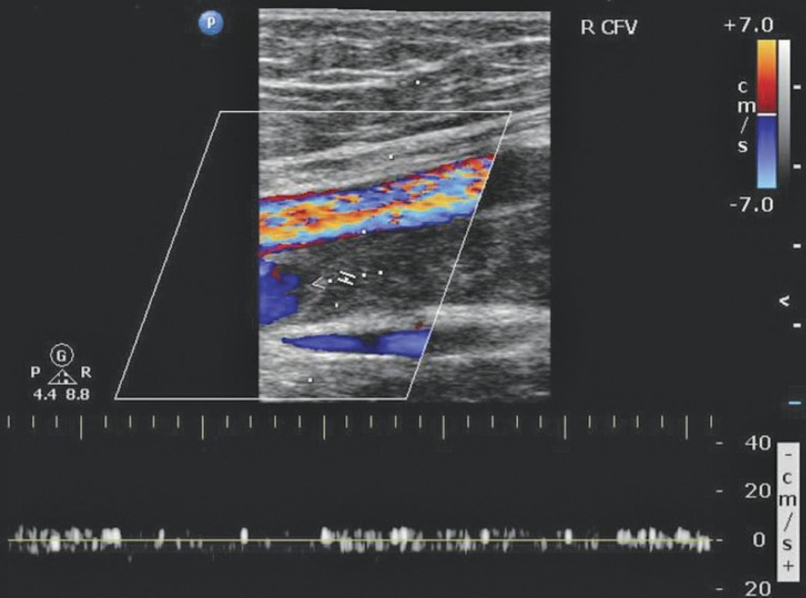
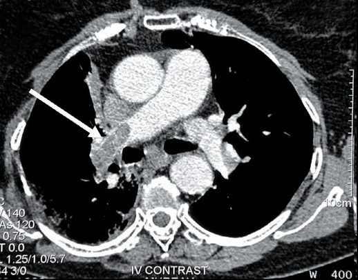

Postoperative Complications
Summary
- Postoperative complications are an important cause of morbidity, mortality, extended hospital stay and increased costs; most at-risk patients can be identified preoperatively using scoring systems such as the ACS NSQIP surgical risk calculator, allowing targeted anticipatory care that reduces both incidence and severity of complications [1].
- Complications are conventionally divided into system-specific complications (respiratory, cardiac, renal, gastrointestinal, neurological, haematological) and surgery-specific complications, and different complications predominate at different points in the postoperative timeline [1][2].
- Standardised severity grading, principally the Clavien-Dindo Classification, allows objective, reproducible comparison of complications between patients, procedures and institutions [3].
Definition
A postoperative complication is any unfavourable event following surgery other than "failure to cure" (the intended outcome not achieved) or an inherent "sequela" of the procedure (e.g. amputation causing disability); Clavien and colleagues first coined the standardised concept of an "adverse outcome" encompassing complications, failure to cure and sequelae in 1992 [3]. Complications are graded according to the treatment they require, which eliminates subjective bias and prevents complications being downgraded [1].
Pathophysiology
- Different complications cluster at characteristic points in the postoperative course: atelectasis is the most common source of fever within the first 48 hours, urinary tract infection predominates from 48 hours to 5 days, and wound infection becomes the leading cause after 5 days, with the fuller sequence being atelectasis, urinary tract infection, pneumonia, DVT, wound infection, and intra-abdominal abscess [4].
- A comparable "Rule of W" timing pattern (pneumonia, urinary tract infection, superficial and deep/organ-space surgical site infection, venous thromboembolism, myocardial infarction, kidney injury/failure plotted against postoperative day) is described, with incidence and timing varying by complication type [1].
- Postoperative haemorrhage is classified pathophysiologically as primary (immediately after surgery, continuation of intraoperative bleeding from unsecured vessels), reactionary (within 24 hours, often venous, related to restored circulation/fluid volume exposing previously unsecured vessels), or secondary (up to 10 days postoperatively, usually due to wound/tissue infection causing clot disintegration) [5].
- Paralytic ileus results from prolonged surgery, bowel handling, peritonitis, electrolyte disturbance, anticholinergic/opiate drugs, prolonged hypotension/hypoxia and immobilisation, causing cessation of GI motility [6].
- Acute kidney injury after surgery is categorised as pre-renal (shock, hypovolaemia, sepsis), renal (sepsis, hypoxia, nephrotoxic drugs, rhabdomyolysis, autoimmune disease) or post-renal (obstructive uropathy, e.g. blocked catheter, prostatic hypertrophy) [7].
Clinical features
- Wound infection presents with pain and wound discharge, malaise, anorexia and fever, with a red, swollen, tender wound that may discharge pus or be fluctuant [8].
- Wound dehiscence may be superficial or full-thickness (exposing fascia or viscera, evisceration in the abdomen), is usually painless, and is most often secondary to wound infection, with contributory factors including immunosuppression, malnutrition, steroid use, poor surgical technique and previous surgery [8].
- Postoperative haemorrhage presents with soaked dressings, wound swelling, blood in drains, pallor, sweating, tachypnoea, tachycardia and hypotension (a late sign in children/young adults); confusion/agitation reflects cerebral hypoxia from hypotension; drains, even correctly placed, are an unreliable sign of bleeding [5].
- Cardiac complications: arrhythmias (commonly AF, especially with underlying ischaemic heart disease) are unstable if accompanied by chest pain, pulmonary oedema/dyspnoea, hypotension (systolic <90 mmHg) or collapse; perioperative MI often presents atypically (patients may be unable to distinguish chest from upper abdominal pain), with duration >20 minutes, haemodynamic instability, nausea, vomiting, confusion, distress, and a cold, clammy, possibly hypoxic patient [9].
- Respiratory failure is defined as type I (PaO2 <8.0 kPa on air) or type II (PaO2 <8.0 kPa with PaCO2 >6.0 kPa); chest infection presents with cough and purulent sputum, pyrexia, bronchial breath sounds/reduced air entry, neutrophilia, raised CRP and consolidation on CXR [10].
- Paralytic ileus presents with nausea, vomiting, hiccoughs, abdominal distension (tympanic or dull to percussion) and air/fluid-filled bowel loops on abdominal X-ray, and usually settles with treatment; mechanical small bowel obstruction (early adhesions, internal/external/parastomal/wound herniation, intra-abdominal sepsis) presents with colicky pain, tympanic distension, high-pitched "tinkling" bowel sounds and dilated small bowel loops with relative colonic gas paucity [6].
- Postoperative delirium may be hyperactive (disoriented, uncooperative, hallucinating) or hypoactive (inactive, quiet, slowed thinking, labile mood, often missed except by relatives/nursing staff) [11].
- Perioperative stroke features include failure to regain consciousness after sedation is weaned, hemiplegia, evolving areflexia to hyperreflexia/rigidity, aphasia, dysarthria, ataxia, visual deficits, unilateral neglect, confusion, seizures, persistent hypertension and hypercapnia; any deficit resolving within 24 hours is a TIA [11].
- DVT presents with leg pain, erythema, swelling and increased local skin temperature and may present first with pulmonary embolism; PE presents with dyspnoea, pleuritic/dull chest pain, tachypnoea, tachycardia, hypotension, elevated JVP, an ECG right ventricular strain pattern (S1Q3T3, neither sensitive nor specific), low PaO2 and classically a normal CXR [12].
Etiology
- Wound infections are most commonly from the patient's own skin flora (Staphylococcus aureus, Staphylococcus epidermidis), with viscus contamination during surgery (E. coli, Pseudomonas) as the second commonest cause [8].
- Postoperative arrhythmia causes include hypovolaemia, pain, sepsis, electrolyte abnormalities (potassium, magnesium) and myocardial ischaemia/MI [9].
- Perioperative myocardial ischaemia can be precipitated by the stress response to major surgery (catecholamine release from anxiety/pain), postoperative fluid overload, profound hypotension, or failure to restart anti-anginal medication [9].
- Acute kidney injury preoperative risk factors include age >75, chronic kidney disease, LV dysfunction, hypertension, diabetes, peripheral vascular disease, dehydration, sepsis, nephrotoxic drugs, obstructive uropathy, trauma and burns; intraoperative risk factors include cardiac surgery, aortic surgery, interventional radiology and major non-cardiac surgery [7].
- Common causes of postoperative delirium include medication (benzodiazepines, opiates, anticonvulsants), stroke, hypoxia, hypercapnia, shock, sepsis, alcohol withdrawal, metabolic disturbance (low glucose/sodium/pH, high calcium/creatinine/urea/bilirubin), post-ictal state and pre-existing dementia [11].
- Risk factors for perioperative stroke include increasing age (>80 years: 5–10% CVA risk), diabetes, previous stroke/TIA (3-fold increased risk), carotid atherosclerosis, perioperative hypotension, left-sided mural thrombus, mechanical heart valve and postoperative AF; aetiology is embolic (carotid disease, AF thrombus), haemorrhagic (postoperative warfarinisation, hypertension), or from cerebral hypoperfusion/hypoxia [11].
- Heparin-induced thrombocytopenia occurs in about 5% of heparin-exposed patients, typically 5–10 days after starting heparin (or after first dose if previously exposed within 3 months), mediated by heparin-dependent IgG platelet antibodies; heparin-induced thrombocytopenia with thrombosis (HITT) occurs in about 20% of HIT cases [13].
- DIC can complicate sepsis, transfusion reaction, drug reaction, transplant rejection and aortic aneurysm surgery, via widespread coagulation activation, intravascular fibrin formation, and consumption of platelets/clotting factors [13].
- DVT risk (Virchow's triad: postoperative platelet increase, venous endothelial trauma, and stasis) is highest in patients over 40 undergoing major surgery; without prophylaxis, 30% develop DVT and 0.1–0.2% die of pulmonary thromboembolism [12].
Diagnosis
- Routine postoperative monitoring after major surgery includes FBC and U&Es on days 1, 2 and 5 (looking for anaemia, raised WCC/sepsis, INR if anticoagulated, sodium/potassium), daily ward-round assessment of ABCDE observations, fluid balance, pain control, mobility, wound inspection and drug chart review [1][14].
- Cardiac arrhythmia work-up includes 12-lead ECG, FBC, U&Es including magnesium, CRP and troponin [9].
- MI is diagnosed as STEMI (ST elevation on ECG) or NSTEMI (T-wave inversion or positive troponin without ST elevation) in the setting of symptoms suggestive of acute coronary syndrome [9].
- Acute kidney injury is defined by KDIGO/RIFLE/AKIN criteria: serum creatinine rise ≤26.5 µmol/L within 48 hours, or rise to ≥1.5× baseline within 7 days, or urine output <0.5 mL/kg/h for 6 hours [7].
- DVT investigation uses the Wells score for risk stratification, with duplex ultrasound as the mainstay of diagnosis (D-dimer is often unhelpfully raised postoperatively; CT/MR venography reserved for suspected iliac/IVC thrombus or intervention planning) [15].
- PE is diagnosed by CT pulmonary angiography (CTPA, gold-standard first-line test) or ventilation/perfusion scan if CTPA is contraindicated (e.g. pregnancy); PE is misdiagnosed in almost 75% of patients, and massive PE is defined as PE causing haemodynamic compromise or affecting >30% of the pulmonary vasculature [15].
- HIT is diagnosed by a platelet count fall of >30% (to <150×10⁹/L) or >50%, plus positive HIT antibody serology [13].
- DIC diagnosis (no single test) is suggested by sudden platelet fall to <100×10⁹/L, bleeding/thrombotic complications, raised APTT/PT/INR, raised fibrin degradation products and (in severe DIC) reduced fibrinogen [13].


Scoring and Severity
- The Clavien-Dindo Classification (2004, revising Clavien's 1992 T92 system) grades complications by the treatment required: Grade I, deviation from normal course not needing pharmacological/surgical/endoscopic/radiological treatment (antiemetics, antipyretics, analgesics, diuretics, electrolytes, physiotherapy, and bedside-opened wound infections are allowed); Grade II, requiring pharmacological treatment beyond Grade I drugs, including blood transfusion and TPN; Grade III, requiring surgical/endoscopic/radiological intervention (IIIa without general anaesthesia, IIIb under general anaesthesia); Grade IV, life-threatening complication (including CNS events such as brain haemorrhage, excluding TIA) requiring ICU management (IVa single-organ dysfunction including dialysis, IVb multiorgan dysfunction); Grade V, death [3].
- Surgeons from seven international centres achieved >90% agreement grading complications with this system [3].
- The Accordion Severity Grading System (Strasberg et al., 2009) offers a contracted (4-level) and expanded (6-level) version for more complex procedures (e.g. pancreatic or oesophageal resection), extending the complication-recording window to 100 days postoperatively [3].
- The Memorial Sloan Kettering Cancer Center (MSKCC) Surgical Secondary Events System modifies Clavien-Dindo for oncologic procedures, notably including chronic disability (rather than ICU-requiring life-threatening complication) as its Grade IV criterion [3].
- The Japan Clinical Oncology Group (JCOG) Postoperative Criteria specify 72 discrete surgical adverse events consistent with Clavien-Dindo principles [3].
- The Comprehensive Complication Index (CCI®), built on Clavien-Dindo, aggregates all of a patient's complications into a single 0 (no complication) to 100 (death) score incorporating patient-assigned complication weights, correlates strongly with cost, and is available via an online calculator [3].
- The National Early Warning Score (NEWS) is used to trigger escalation of postoperative care: aggregate score 0–4 (low risk, ward-based response), a single parameter scoring 3 (low-medium, urgent ward-based response), aggregate 5–6 (medium, key threshold for urgent response), aggregate ≥7 (high risk, urgent/emergency response team including critical-care/airway skills) [1].
- Sepsis severity is screened using quick SOFA (qSOFA): potentially life-threatening sepsis is suggested by at least two of altered mental status, systolic BP ≤100 mmHg, and respiratory rate >22/min; a rise in full SOFA score of ≥2 correlates with a 10% in-hospital mortality risk [17].
Treatment and Management
- Postoperative haemorrhage: establish two large-bore IV lines, give crystalloid boluses up to 1000 mL if tachycardic/hypotensive, apply direct compression to superficial bleeding, send emergency cross-match (minimum 2 units), consider tranexamic acid 1 g IV (except post-vascular surgery), and involve senior help/theatres/ITU early; re-operation, when needed, should be performed or supervised by a senior surgeon, with radiologically guided embolisation and correction of clotting as an alternative when re-operation is undesirable [5].
- Wound infection is treated with IV antibiotics for systemic features (empirical anti-staphylococcal cover, broadened with metronidazole/cefuroxime if immunosuppressed or unwell, adding vancomycin if MRSA is a concern) plus opening/drainage of any contained pus [8].
- Wound dehiscence: cover exposed viscera with saline-soaked dressings, treat any infection, and manage superficial dehiscence with lavage/dressings (vacuum-assisted closure for large defects) while full-thickness dehiscence may need re-suturing in theatre or, if re-closure is inappropriate, healing by secondary intention (laparostomy in the abdomen), sometimes assisted by vacuum closure [8].
- Cardiac arrhythmia: treat the underlying cause, give oxygen if hypoxic, obtain ECG monitoring/defibrillator access; unstable tachyarrhythmias need synchronised DC cardioversion, fast AF is treated with beta-blockers/diltiazem/digoxin, SVT with vagal manoeuvres/adenosine/amiodarone, and VT with amiodarone; unstable bradyarrhythmia is treated with atropine (up to 3 mg), transcutaneous pacing, or isoprenaline/adrenaline infusion [9].
- Perioperative MI management: high-flow oxygen, IV morphine and metoclopramide, aspirin 300 mg and sublingual GTN, urgent cardiology involvement for consideration of acute intervention, and further anticoagulation balanced against bleeding risk [9]; initial treatment is summarised by the mnemonic "BMOAN" (beta-blocker, morphine, oxygen, aspirin, sublingual nitrates) with STEMI requiring emergent PCI [18].
- Respiratory failure/chest infection: sit the patient up with high-flow oxygen, treat bronchospasm with nebulised salbutamol, obtain CXR and ABG, give antibiotics per local hospital-acquired pneumonia policy, provide effective analgesia to allow coughing, humidify supplemental oxygen, and consider CPAP for basal collapse [10].
- Paralytic ileus is treated by nasogastric decompression ("drip and suck"), IV fluid/electrolyte correction, reducing opiate analgesia and encouraging mobilisation; mechanical obstruction is managed similarly with strict bowel rest and CT to define the level/cause, with surgery rarely required [6].
- AKI management targets a mean arterial pressure >60 mmHg via intravascular filling/vasopressors, neutral fluid balance once resuscitated, daily (or more frequent) electrolyte monitoring, avoidance of potassium-raising drugs and nephrotoxins, and relief of any obstruction, with renal replacement therapy for failure of conservative measures; severe hyperkalaemia (K+ >6.0 mmol/L or ECG changes) is treated urgently with IV calcium gluconate, insulin-dextrose infusion, and nebulised salbutamol, with dialysis for refractory cases [7].
- Postoperative delirium is managed by re-orientation in a calm environment, treatment of reversible contributors (hypoxia, hypotension, metabolic derangement, opiates/benzodiazepines), and haloperidol (up to 10 mg/24h) or an atypical antipsychotic if sedation is needed for safety; alcohol withdrawal is treated with chlordiazepoxide plus thiamine/B vitamin replacement [11].
- Suspected stroke requires urgent CT head (to distinguish ischaemic from the roughly 1-in-10 haemorrhagic cases), carotid duplex, ECG/echocardiography if embolic source suspected, and thrombolysis within 4.5 hours where not contraindicated (haemorrhagic stroke is an absolute contraindication; recent surgery a relative one) [11].
- Status epilepticus is treated with IV lorazepam or diazepam, correction of hypoglycaemia, and IV phenytoin if seizures persist [11].
- HIT management is discontinuation of all heparin (including flushes), with danaparoid, iloprost, hirudin or warfarin as alternative anticoagulants pending haematology advice [13].
- DIC is managed by treating the underlying cause, with FFP/platelets/blood/cryoprecipitate for bleeding and heparin for thrombosis, guided by coagulation screens [13].
- Excessive warfarinisation is managed according to INR and bleeding status: omit warfarin for INR 5–8 without bleeding; add oral vitamin K for INR >8; use IV prothrombin complex concentrate (e.g.
- Beriplex) with vitamin K for bleeding or urgent reversal [13].
- DVT is treated with therapeutic LMWH or fondaparinux (unfractionated heparin in severe renal impairment), followed by at least 3–6 months of warfarin or a DOAC; catheter-directed thrombolysis may be used for iliofemoral DVT, and an IVC filter considered if anticoagulation is contraindicated [15].
- Haemodynamically unstable PE is treated with thrombolysis (if no contraindication such as surgery within 30 days); otherwise, oxygen, anticoagulation (LMWH/UFH/fondaparinux) and transition to oral anticoagulation [15].

Surgeries
- Re-operation for postoperative haemorrhage should be performed (or supervised) by a senior surgeon, ideally the original operating surgeon or with their input [5].
- Surgical exploration and evacuation is indicated for wound haematoma after vascular surgery, flap surgery, or limb/neck procedures, to avoid ischaemia, compartment syndrome, airway obstruction, or flap failure [5].
- Full-thickness wound dehiscence may require re-suturing/closure in theatre, or formation of a controlled chronic wound (laparostomy) when re-closure is inappropriate [8].
- Decompressive laparotomy is the standard of care for refractory abdominal compartment syndrome, though adjunctive measures (minimising fluid, escharotomy, reduced tidal volumes, chemical paralysis) should be tried first in burn patients given its especially poor prognosis in that group [20].
- Fulminant Clostridium difficile colitis with perforation requires emergency total abdominal colectomy with ileostomy [4].
- Radiologically guided embolisation is a surgical/interventional alternative to re-operation for ongoing bleeding when re-operation is undesirable [5].
Complications
- (Complications of complications, the destabilising sequelae described above become self-perpetuating if untreated.) Severe hyperkalaemia (K+ >6.0 mmol/L) from AKI can cause life-threatening ventricular arrhythmias, with ECG changes progressing through flattened P waves, widened QRS, tented T waves to VF or asystole in cardiac arrest [7].
- HITT (thrombosis complicating HIT) occurs in about 20% of HIT patients and carries a mortality of about 30% [13].
- Acute massive PE has a 30-day mortality of about 50% (40% within the first 2 hours); surgical intervention mortality is up to 70% in patients requiring preoperative CPR/mechanical circulatory support, and about 30% in stable patients undergoing operative intervention [15].
- Wound infection can progress to bacteraemia (common but rarely significant) or, rarely, septicaemia (in resistant organisms or immunosuppressed patients) [8].
- Refractory abdominal compartment syndrome in burn patients has an especially poor prognosis even with decompressive laparotomy [20].
Prognosis
- The Comprehensive Complication Index provides a validated, cost-correlated single measure of overall postoperative morbidity burden, from 0 (no complication) to 100 (death), and functions as a sensitive endpoint in randomised trials [3].
- Increasing Clavien-Dindo grade corresponds to escalating resource use and severity, culminating in Grade V (death) [3]. qSOFA/SOFA scoring links early organ dysfunction to mortality risk, with a SOFA increase of ≥2 associated with approximately 10% in-hospital mortality [17].
- NEWS aggregate scores of ≥7 identify patients needing urgent/emergency escalation, reflecting the highest short-term deterioration risk [1].
- Surgical complications also impose a substantial global health and economic burden, including direct costs (prolonged stay, further treatment) and indirect costs (lost productivity, caregiver burden, long-term disability), with this burden compounded in low- and middle-income countries by limited healthcare infrastructure [3].
References
- Bailey & Love's Short Practice of Surgery, 28th ed., Ch. 24 Postoperative care including perioperative optimisation
- Oxford Handbook of Clinical Surgery, 5th ed., Cardiac/Respiratory/Renal/Gastrointestinal/Neurological/Haematological complications
- Sabiston Textbook of Surgery, 22nd ed., Ch. 26, Table 26.1; corroborated in near-identical form by *Bailey & Love 28e*, Ch. 24, Table 24.1
- The ABSITE Review, 2022, Ch. 5 Surgical Infection
- Oxford Handbook of Clinical Surgery, 5th ed., Post-operative haemorrhage
- Oxford Handbook of Clinical Surgery, 5th ed., Gastrointestinal complications
- Oxford Handbook of Clinical Surgery, 5th ed., Renal complications
- Oxford Handbook of Clinical Surgery, 5th ed., Wound emergencies
- Oxford Handbook of Clinical Surgery, 5th ed., Cardiac complications
- Oxford Handbook of Clinical Surgery, 5th ed., Respiratory complications
- Oxford Handbook of Clinical Surgery, 5th ed., Neurological complications
- Oxford Handbook of Clinical Surgery, 5th ed., Deep vein thrombosis and pulmonary embolism
- Oxford Handbook of Clinical Surgery, 5th ed., Haematological complications
- Oxford Handbook of Clinical Surgery, 5th ed., Post-operative management
- Oxford Handbook of Clinical Surgery, 5th ed., DVT and pulmonary embolism
- Schwartz's Principles of Surgery: ABSITE and Board Review, Ch. 24
- Schwartz's Principles of Surgery: ABSITE and Board Review, Ch. 6
- The ABSITE Review, 2022, Ch. 8
- Bailey & Love's Short Practice of Surgery, 28th ed., Ch. 47
- Schwartz's Principles of Surgery: ABSITE and Board Review, Ch. 8